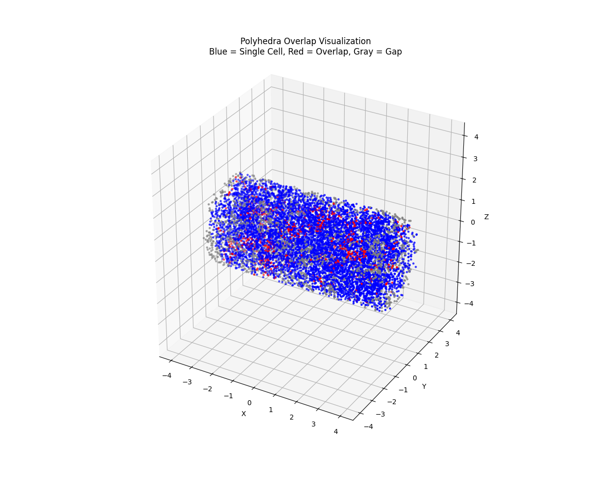
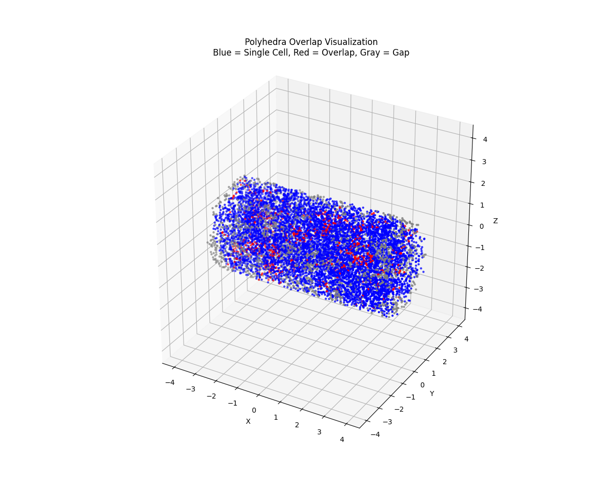

CrystalCell Simulation
Flexible Framework for Crystal Formation in 3D Printed Structures
 

CrystalCell Simulation is a computational framework designed to generate detailed crystal geometries in 3D printed structures. The system creates a lattice of individual crystal cells within a non-cubic domain—such as a cylinder—using advanced computational geometry, spatial queries, and clustering techniques. This method addresses common border artifacts present in conventional techniques like Voronoi tessellations, and it is applicable not only to metal crystals but also to other systems such as perovskites, semiconductors, and ceramics.
The project focuses on key questions such as:
- How can geometric techniques generate realistic crystal cell structures in diverse 3D shapes?
- How can gaps and overlaps in the crystalline lattice be detected, quantified, and ultimately reduced?
- How can iterative refinements be applied to ensure uniform cell distribution and fill void regions?
Approach: The simulation follows a step-by-step process: - Defining a cylindrical domain, then packing it efficiently with nucleation sites using KD-tree based spatial queries. - Tagging particles according to their position relative to the cylinder’s surface and along its axial direction. - Constructing polyhedra via convex hulls around particle groups to define individual crystal cells. - Analyzing gaps and overlaps through volumetric sampling and using K-means clustering to guide additional cell placement.
Visualizations: Animated GIFs illustrate the sequential formation and rotation of the crystal lattice, while a density heat map reveals local crystal concentration. Detailed images also show areas of overlap and empty regions, offering insights into cell distribution and potential refinements.
Technologies & Techniques: The project leverages particle-based dynamics, KD-tree spatial querying, convex hull construction, and unsupervised clustering (K-means). Although it incorporates elements of machine learning (via K-means), its primary focus is on simulation and computational geometry, providing a versatile platform for microstructural analysis in 3D materials.
Furthermore, the framework is designed to eventually simulate how individual crystals respond to different processing conditions—such as heat, chemical exposure, or mechanical stress. By modeling crystals as distinct entities with unique morphologies, the system enables detailed study of population dynamics and behavior, which is critical for understanding and optimizing material performance.